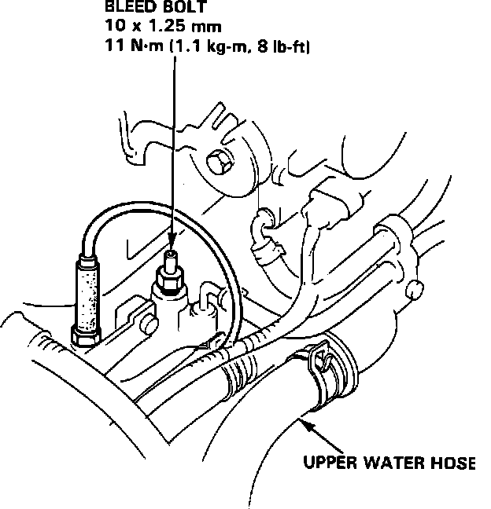

Cooling System: Service and Repair
REPLACING COOLANTCAUTION: Do not mix different brands of anti-freeze/coolants. Do not use additional rust inhibitors or anti-rust products; they may not be compatible with the recommended coolant.
1. Move heater control lever to maximum heat position.
2. With radiator cool, remove radiator cap and drain plug. Drain coolant.
3. Reinstall and tighten drain plug.
4. Remove the reserve tank. Drain, clean and reinstall.
NOTE: Use only acura recommended anti-freeze/coolant. For best protection maintain a minimum 50/50 coolant water mix. Concentrations less than 50% do not provide adequate freeze protection. Concentrations over 60% can cause overheating.
5. Refill the tank halfway to MAX mark with water and then up to MAX mark with coolant.
6. In a clean container, mix the recommended coolant in 50/50 proportions with water.
Coolant Air Bleed Nipple:

7. Loosen the air bleed bolt in the water outlet. Fill the radiator with the coolant mixture until it reaches the bottom of the filler neck. Tighten the air bleed bolt as soon as a steady stream of coolant without bubbles comes out.
8. With the radiator cap "OFF", start the engine and run it until the cooling fan has cycled on and off twice. Refill coolant as needed to bottom of radiator filler neck.
Refill Capacity
M/T 7.9 U.S. qts (7.5 l)
A/T 7.8 U.S. qts (7.4 l)
9. Replace radiator filler cap and run engine checking for leaks.